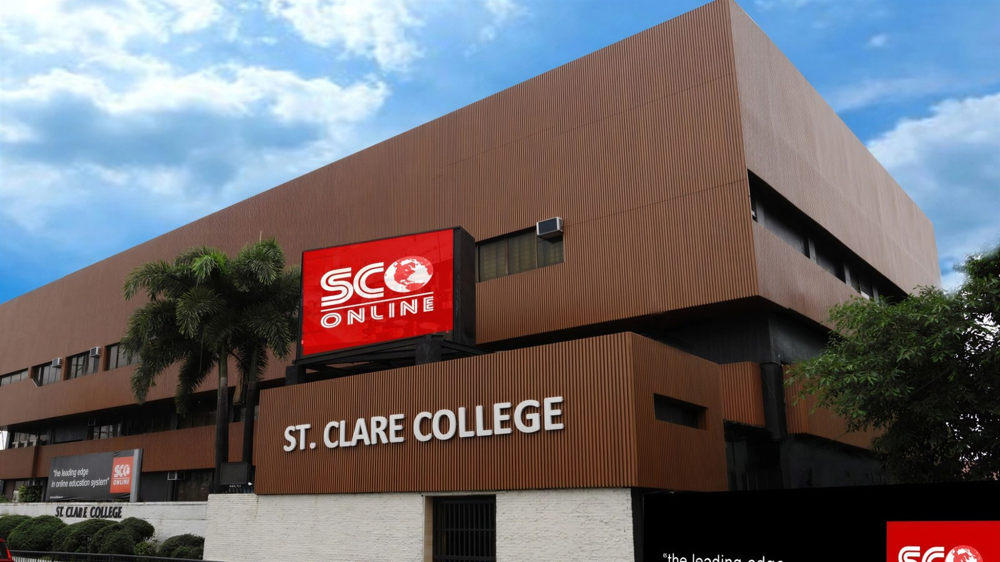

The School of Life Skills
St. Clare College of Caloocan educates learners from Nursery to College, on one campus in Caloocan City and online through St. Clare Online.
Academic programmes
From a child's first school day to a bachelor's degree, every stage of learning happens at St. Clare.
College
Eight bachelor's degree programmes
- BSCSBS Computer Science
- BSHMBS Hospitality Management
- BSTMBS Tourism Management
- BSBABS Business Administration
- BEEdElementary Education
- BSEd-EngSecondary Education, Major in English
- BSEd-MathSecondary Education, Major in Math
- AB PolSciAB Political Science
Senior High School
Academic, Arts & Design and TVL tracks
- ABMAccountancy, Business & Management
- HUMSSHumanities & Social Sciences
- A&DArts & Design
- ICTTVL - Information & Communications Technology
- HETVL - Home Economics
A college built for professional life
St. Clare aims to be the leading institution for professional development, with lessons on e-boards, laboratories for hands-on practice and a Virtual Lab for mixed reality.
- 1985
- Founded 31 August in Caloocan City
- 95
- Classrooms, every one with an e-board
- 38th
- Commencement exercises, June 2024
- 2
- Learning modalities: full online or blended
How to enroll
Bring your requirements in a long brown envelope and complete three steps on campus.
- Cashier
Pay the matriculation fee
- Proceed to the cashier and pay the matriculation fee (designated cashier only).
- Get and keep your OFFICIAL RECEIPT.
- Lobby
Fill up the registration form
- Go to the LOBBY and present your Official Receipt to the Enrollment Officer.
- Fill up the REGISTRATION FORM.
- Check that your SUBJECTS are listed on the registration form.
- Library, 3rd floor
Register online for your schedule
- Proceed to the LIBRARY on the 3rd floor for ENLISTMENT at stclareonline.com/ims.
- Your section and schedule are posted on the website and sent by email by your Program Head.
What happens next: your Program Head posts your section and schedule on the website and emails them to you. Call (02) 8232-4483 to confirm this school year's enrollment dates and fees.
Learning that continues online
St. Clare Online connects learning, the e-Library, enrollment and broadcasting in one platform, so students can study fully online or blended.
- LMS for schedules, materials and progress
- e-Library powered by ProQuest
- Virtual flag ceremony every Monday, 7:00 AM
News and announcements
The Professional Mace: the eternal flame of professionalism
St. Clare College introduced its Professional Mace, “a beacon of professionalism and culture of excellence.”
SHS Alumni VIP Package for St. Clare graduates
St. Clare SHS Class of 2024 graduates who continued to college could avail of the President's Scholarship with zero down payment for SY 2024-2025.
The Stars of 2024: 38th Commencement Exercises
St. Clare College celebrated its 38th Commencement Exercises in June 2024, streamed on the Virtual Management System.
Begin your journey at St. Clare
Basic Education, Senior High School and College, on campus or fully online.